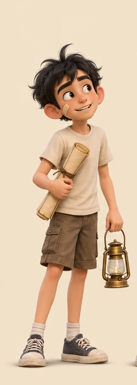
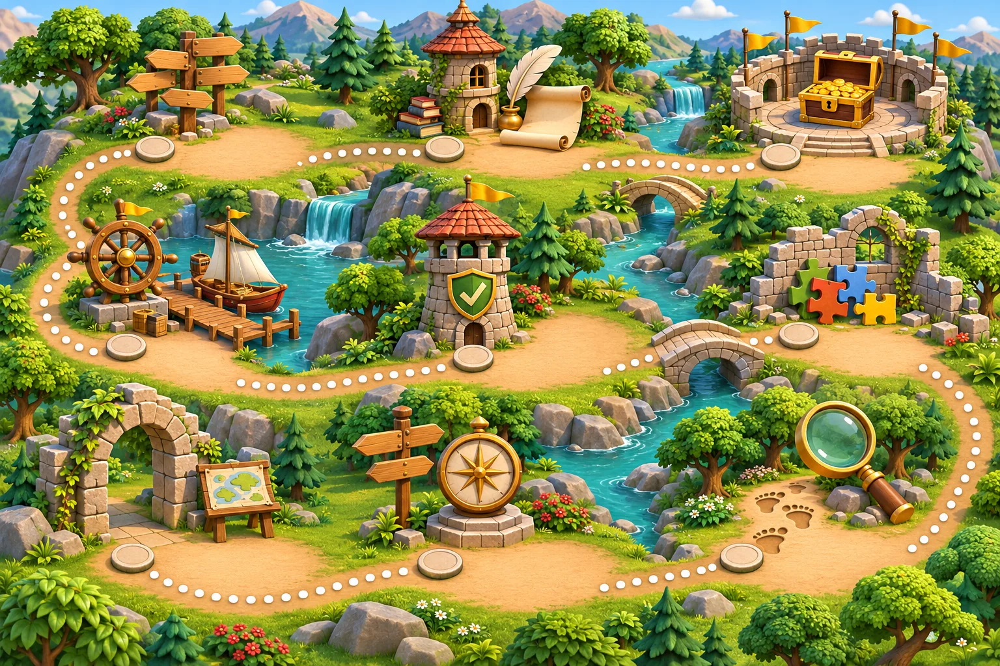

Aras yola elinde bir harita ve küçük bir fenerle çıkıyor. Her durakta paragraf sorularını çöz, ekipman kazan, seviye atla ve hazinenin anahtarını bul.


Parlayan durağa dokun. Geçtiğin duraklara geri dönüp daha çok yıldız toplayabilirsin.